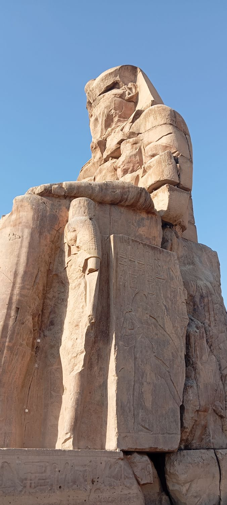

Orilla oeste de Luxor · Amenhotep III · h. 1360 a. C. · día 6 del viaje Alimaña · English version ↗
Los Colosos de Memnón
Dos estatuas gigantes de Amenhotep III sentado se alzan solas entre los campos de la orilla oeste. Guardaban la puerta de su enorme templo, que un terremoto destruyó y que los reyes posteriores usaron como cantera; solo sobrevivieron los colosos. En época romana se decía que uno de ellos cantaba al amanecer, y los visitantes griegos le dieron el nombre de Memnón, un héroe de la guerra de Troya.
Probablemente el coloso sur, con una de las reinas junto a la pierna del rey; detrás, estatuas que el proyecto de conservación ha vuelto a levantar. Nuestra foto, 23 de noviembre de 2026.
Las estatuas
Dos reyes de piedra
Quién
Amenhotep III en su trono, con su esposa Tiy y su madre Mutemuia
Tamaño
Unos 18 m de alto con los pedestales; entre 700 y 800 toneladas cada uno
Piedra
Cuarcita de Gebel el-Ahmar, cerca de El Cairo; cada estatua es un solo bloque, traído río arriba en barcazas
Dónde
Orilla oeste de Luxor, junto a la carretera del Valle de los Reyes
El templo
Un gigante desaparecido
Nombre
Templo de Millones de Años, hoy Kom el-Hettan
Construido
Primera mitad del siglo XIV a. C.
Destino
Destruido por un terremoto h. 1200 a. C. y usado como cantera
Hoy
Los dos colosos, cimientos y estatuas vueltas a levantar
Audioguía
Unos seis minutos en español para escuchar durante la visita: un capítulo por cada número del dibujo, la estatua que cantaba y el templo desaparecido. Pulsa un capítulo para saltar a él. Voz neuronal de Microsoft (Elvira).
Cómo leer un coloso
Las dos estatuas siguen el mismo diseño. Ponte delante y luego rodéalas para ver los lados y la parte de atrás. Pulsa un número en el dibujo.
Vista frontal simplificada, sin escala.
1
La doble corona perdida
Sobre el tocado, cada rey llevaba la doble corona del Alto y el Bajo Egipto. Las dos han desaparecido; solo queda un fragmento en lo alto de la estatua sur.
2
El rostro y el tocado
El tocado nemes a rayas enmarca un rostro que el viento, la arena y los siglos han dejado casi liso. Cada estatua se talló en un solo bloque de cuarcita.
3
Las manos sobre las rodillas
El rey está sentado muy erguido, con las dos manos planas sobre las rodillas: la postura serena e intemporal de un rey-dios que recibe ofrendas, la misma a cualquier tamaño.
4
El faldellín real
Lleva el faldellín real plisado, el shendyt, con una cabeza de pantera tallada en alto relieve sobre el regazo.
5
La reina Tiy
Apoyada en el trono junto a su pierna derecha, a tu izquierda, está su gran esposa real, Tiy, la madre de Ajenatón. Diminuta junto a sus piernas, aun así mide varios metros.
6
La reina Mutemuia
Junto a su pierna izquierda está la reina madre, Mutemuia. Esposa y madre sitúan al rey dentro de su familia, las dos bajo su protección.
7
Los lados del trono
Rodea la estatua: dos dioses del Nilo barrigudos, Hapy, atan el papiro del norte y el lirio del sur alrededor del jeroglífico que significa «unir». Esta escena, el sema-tawy, muestra al rey manteniendo unidas las Dos Tierras.
Cada estatua se alza sobre un pedestal de tres bloques enormes. Detrás, columnas de jeroglíficos recogen la dedicatoria de estas «grandes estatuas traídas de la Heliópolis del Norte a la Heliópolis del Sur»: de la cantera cerca de El Cairo a Tebas.
9
Los grafitis de los visitantes
Las piernas y los pies de la estatua norte están cubiertos con 107 inscripciones en griego y latín, dejadas por visitantes que vinieron a oírla cantar entre h. 24 a. C. y el 205 d. C.
Durante dos siglos, el coloso norte fue una de las grandes atracciones del mundo romano.
El coloso norte, el «Memnón»: la parte superior es la reconstrucción romana en hiladas de bloques.

Una reina junto a la pierna del rey y el lado tallado del trono. Nuestras fotos.
Roto por un terremoto
Un terremoto en época romana, que suele fecharse en el 27 a. C., agrietó los pedestales y derribó la mitad superior de la estatua norte. La del sur quedó entera, con grietas.
Una voz al amanecer
Pronto los visitantes contaron que la estatua rota emitía un sonido agudo al salir el sol, quizá porque la piedra se calentaba y se secaba tras la noche fresca y las grietas se dilataban.
Memnón, hijo de la Aurora
Los griegos oyeron el grito de Memnón, el rey etíope al que Aquiles mató en Troya, saludando a su madre Eos, la Aurora. El nombre se quedó para las dos estatuas, aunque representan a Amenhotep III.
La visita de un emperador
En el 130 d. C. vinieron a escucharla el emperador Adriano y su esposa Sabina. La poeta Julia Balbila, que viajaba con ellos, grabó sus poemas a Memnón en la pierna izquierda.
Peregrinos y soldados
Prefectos, soldados destinados en la Tebaida, funcionarios romanos y turistas dejaron su nombre, la fecha y la hora en que oyeron la voz, a menudo «a la primera hora».
Silenciada
Hacia el 200 d. C. la estatua enmudeció, probablemente después de que su parte superior se reconstruyera con hiladas de bloques de cuarcita de Gebel Tingar, cerca de Asuán. Se suele atribuir la obra a Septimio Severo, que la visitó en el 199, pero ninguna inscripción lo demuestra.
El templo desaparecido
Los colosos estaban delante del primero de tres pilonos; una larga vía procesional llevaba hacia el oeste hasta los santuarios donde descansaban los dioses de Tebas durante la Bella Fiesta del Valle.
Plano esquemático, sin escala, según los paneles informativos del lugar.
El mayor de su clase
Los colosos guardaban la puerta del «Templo de Millones de Años» de Amenhotep III, el templo real más grande y rico jamás construido en la orilla oeste, dedicado a «su padre Amón-Ra».
Un terremoto y una cantera
Hacia el 1200 a. C., al principio del reinado de Merenptah, un terremoto derribó sus pilonos, columnas y estatuas. Merenptah y otros reyes posteriores se llevaron las piedras para sus propios templos.
Crecidas, limo y traficantes
La crecida del Nilo cubrió las ruinas de limo. En el siglo XIX, agentes de traficantes de antigüedades excavaron en Kom el-Hettan, «la colina de las piedras areniscas», y enviaron esfinges, estatuas y cabezas a Alejandría y a Europa.
De nuevo en pie
Desde 1998, el Proyecto de Conservación de los Colosos de Memnón y del Templo de Amenhotep III excava el lugar, ha consolidado los colosos y ha vuelto a levantar estatuas caídas en el campo que hay detrás.
Los colosos a través del tiempo
h. 1390–1353 a. C.
Reinado de Amenhotep III, en el apogeo de la riqueza y el poder de Egipto.
h. 1360 a. C.
Los dos colosos, de unos 18 m con sus pedestales y entre 700 y 800 toneladas cada uno, llegan en barcaza desde las canteras de cuarcita de Gebel el-Ahmar, cerca de El Cairo, y se levantan ante el primer pilono.
h. 1200 a. C.
Un terremoto destruye el templo; sus piedras se reutilizan como cantera.
27 a. C.
Otro terremoto, según el geógrafo griego Estrabón, rompe el coloso norte, que empieza a «cantar» al amanecer.
130 d. C.
Adriano y Sabina oyen la voz; Julia Balbila graba sus poemas.
199 d. C.
Visita de Septimio Severo; poco después, la estatua se reconstruye y enmudece.
siglo XIX
Los traficantes de antigüedades saquean Kom el-Hettan.
1964–1970
Estudios del servicio de antigüedades egipcio y del Instituto Suizo de investigación arquitectónica.
desde 1998
El proyecto de conservación excava el templo y vuelve a levantar sus estatuas.
Para nuestra visita
Una parada corta
Los colosos están junto a la carretera; basta un cuarto de hora, de camino al Valle de los Reyes o a la vuelta.
Rodéalos
Lo mejor tallado está en los lados de los tronos, con los dioses del Nilo, y en las reinas junto a las piernas.
Luz de la mañana
Las estatuas miran al este, hacia el río y el amanecer, así que el sol de la mañana ilumina su frente.
Mira detrás
En el campo de detrás sigue trabajando el proyecto de conservación, con estatuas levantadas de nuevo y fragmentos colocados junto a sus pedestales.
Forma parte del Private Alimaña Tour ↗ (en inglés). Los dibujos son esquemáticos; las fechas son aproximadas. Datos de los paneles informativos del lugar y de obras de referencia.